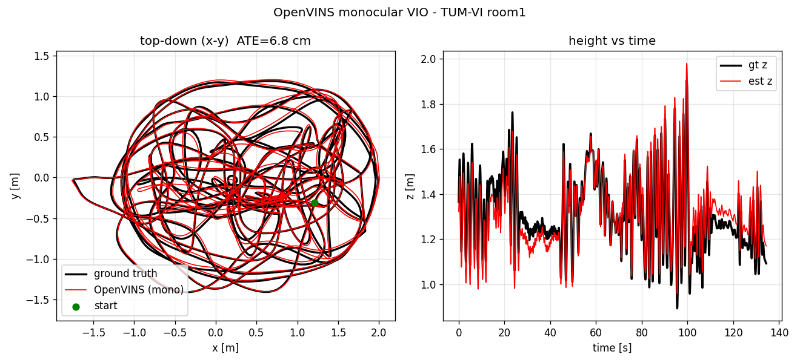

Monocular IMU+Camera VIO
OpenVINS (MSCKF) in a ROS1 Noetic Docker image. Mono camera, no GPS, KLT tracker front-end.
Stack
OpenVINS MSCKF — sliding-window factor graph
KLT optical flow — Lucas-Kanade tracker (default front-end)
Docker: openvins:noetic — ROS1, Ceres, catkin
Init Bug Fixed
init_max_disparity: 80 → 1.5
Dynamic init fires only when disparity exceeds the threshold. At 80 px, a smooth ascent never triggered it. At 1.5 px, gravity+bias+velocity lock on first camera motion. Keeper fix.
Baro Updater Added
UpdaterBarometer: y = p_z + noise, H=[0,0,1]. Constrains z only. On real flights breaks because chi² gate rejects updates once horizontal scale has diverged. Not a solution for scale — a z-stabilizer only.
ATE by dataset (log scale)
Isaac Sim: scale factor vs time (divergence profile)


image_transport v1.15 crash — fixed in Dockerfile. Static destructors unload a Poco plugin on std::exit() → LibraryUnloadException → terminate(). Three-part fix: remove compressed-depth transport, replace image_transport::Publisher with ros::Publisher in ROS1Visualizer, and every new YAML param must pass required=false to avoid crash-on-missing-param.